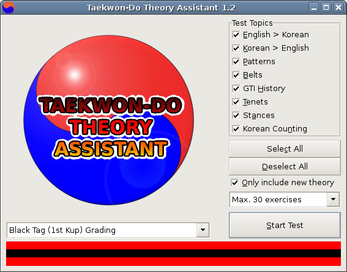
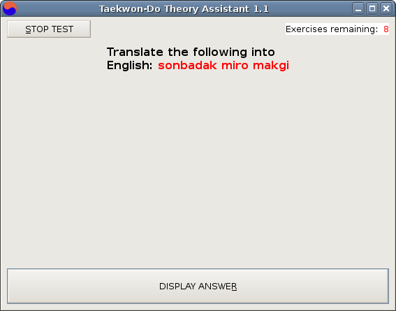
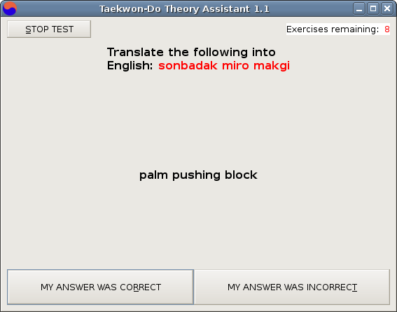

- about this program
- how to use it (basic)
- how to use it
(advanced)
- what's new / changelog
This is a program designed to help students to learn their Taekwon-Do theory ready for their grading. It has been designed with the GTI school of Taekwon-Do particularly in mind. For the moment, it goes from Yellow Tag to 1st Degree Black Belt, and the main focus is on the Korean vocabulary.
I think that I should mention that there are three kicks that have been included but that I'm not completely happy with. This is because I am not 100% certain of the precise terminology to use. The three kicks are as follows:
For example, I have looked in General Choi's concise encyclopaedia and found that the description of golcho chagi (hooking hick) does not match what I know from class to be golcho chagi. Another kick, bandae dollyo gorochagi (reverse hooking kick) comes close.
return to help file 'contents' section
I think that this program is fairly intuitive to use, but I'll give a rundown of how to use it all the same.
When you start it up, you should be greeted by the following screen:

The first thing to do is to let the program know which belt you'll be going for at your next grading. At the very bottom of the window, you should see a graphical representation of a belt (black tag, in this example). Just above this is a box with a little downwards-pointing triangle. Click on the triangle and you should be presented with a list of available belts.
You should then select which type of questions you would like to be asked. This is done in the 'test topics' area of the screen. A tick next to a particular topic indicates that that topic will be included in the test. Clicking on a topic makes its tick appear or disappear and by doing this you can customise your questions to be just how you like them.
The 'only include new theory' tick box allows you to choose whether you'd like to be tested on all the theory that you need to know for your next grading, or just the new theory that you've had to learn since your last grading. For example, if the box is not ticked and you're going for your blue belt, you'll still be asked questions about the Chon-Ji tul. If the box is ticked, you'll only be asked new theory such as the meaning of the Yul-Gok tul.
New to version 1.1 is the option to limit the number of exercises that you'll be given in one test. There is a drop-down menu just above the 'Start Test' button that allows you to select the absolute maximum length of the test. If you were going for your black belt, for example, and you wanted to be tested on theory from yellow tag to black belt, you could be given more than 300 exercises which would take a long time to complete. You might prefer, therefore, to only be given a maximum of 30 exercises.
All that's left to do now is to click on 'Start Test'

So, the first exercise is presented, as you can see above. Now, this isn't supposed to be some kind of 'Who Wants To Be A Millionaire' game. You don't get awarded points. There are no time limits. There's nothing to stop you from 'cheating'. All you do is 'think' the response in your head or even speak it out loud if you like (this can actually help some people to learn). You then click on 'DISPLAY ANSWER' and...

...the correct response is displayed. If you were right, click on 'MY ANSWER WAS CORRECT'. If you were not 100% correct, click on 'MY ANSWER WAS INCORRECT'. The exercise will come up again later on in the test, with the hope that you'll remember the answer next time! Again, you can cheat, but what is the point??!!!! - you're doing this to learn!
You'll keep having these exercises fired at you until you answer them all correctly. The number of exercises remaining is indicated in the top-right of the window.
If you want to know a bit more about the program, move on to the next section. The part about the keyboard shortcuts is particularly recommended.
return to help file 'contents' section
This section covers two areas: 'keyboard shortcuts' and 'the configuration file'.
KEYBOARD SHORTCUTS
Although this software may be controlled just fine with a mouse, many people (myself included) prefer to use the keyboard.
As you can see in the above screenshot, many of the words contain an underlined letter. What this shows is that a particular option may be selected or deselected by pressing the ALT key along with the underlined letter. For example, if we take the above screenshot as an example, pressing ALT + a will deselect the option to have exercises in the test related to stances. Similarly, the test may be started by pressing ALT + s.
Similar keyboard shortcuts exist to control the test itself- just look out for those underlined letters! However, I quickly found that having to press ALT all the time during the test was very annoying, so I added some extra shortcut options. During the test, the shortcuts for DISPLAY ANSWER, MY ANSWER WAS CORRECT and MY ANSWER WAS INCORRECT may be used without the need to press ALT, ie. if we take the above screenshot as an example, pressing the r key by itself will select the MY ANSWER WAS CORRECT option.
You may wonder why I chose the r and t keys for the MY ANSWER WAS CORRECT and MY ANSWER WAS INCORRECT shortcuts. I chose those letters because they are next to each other on the keyboard (well, on my qwerty keyboard they are!) which makes them easier to press using two fingers on one hand.
As if these options were not enough, you have yet another way of controlling the test with the keyboard: using the cursor (or arrow) keys to navigate and SPACE to select. When you are given a new exercise, the DISPLAY ANSWER button is selected by default, so to see the answer you need only press the SPACE BAR. The default option then becomes MY ANSWER WAS CORRECT, so if your answer was correct, you need only press the SPACE BAR to move on to the next exercise. If your answer was incorrect, first press the RIGHT ARROW key to select the MY ANSWER WAS INCORRECT button, then press the SPACE BAR to move on to the next exercise. I personally find this to be the best method by far.
THE CONFIGURATION FILE
A useful feature of this software is that it remembers your test settings (belt & topics) from the last time you used the program. In order to do this, some information is saved in a configuration file which is located somewhere on your computer.
In Linux, the default location for this file is ~/.tkd.
In Windows, by default, this file is saved in the same location as the tkd.exe file.
Now these settings will more that likely work just fine for you, but for Windows users in particular there are a couple of reasons why you might want to change them:
1 - The settings are not being remembered.
The file can only be created if the user that you are logged in as has permission to write to the program's install directory. If this is not the case, the file will need to be kept in a location that you do have write permissions for.
2 - You want every user on your computer to be able to save their own settings.
Firstly, each user must have their own user account on your computer, ie. they can log on to it with their own username. For people to be able to save their own settings, the configuration needs to be stored somewhere in their user folder. In Windows XP, for example, this could be:
C:\Documents and Settings\%username%\Application Data
In order to change the location of the configuration file, you need to create a new text file called configpath.ini All that this file needs to contain is the new path of the configuration file. The configpath.ini. file needs to be saved in the folder containing tkd.exe, so if you cannot save the file there, get someone with write permissions such as the computer administrator to do this for you.
So if I wanted this file to be saved in E:\Data, I would open a text editor (such as Notepad in Windows) and type E:\Data. I would then save this file in the directory containing tkd.exe and name it configpath.ini. It's as easy as that.
return to help file 'contents' section
-version 1.2.1-
- minor changes for compatibility with new www.taekwondotheory.co.uk site
-version 1.2-
- added a 'Korean counting' topic
- minor corrections to the theory to improve consistency of word order
- hooking, axe, and crescent kicks have been added
-version 1.1-
- added the possibility of limiting the number of exercises in a test
- added a little more detail to the tenets of Taekwon-Do
- several additions, amendments and changes in spelling to improve consistency
-version 1.0-
This is the first release of the new version of the Taekwon-Do Theory Assistant. The following new
features have been added (compared to the old Visual Basic version I wrote a while ago, which had only a
very limited release):
- minor corrections to the theory
- both Windows and Linux operating system compatibility
- improved keyboard shortcuts
return to help file 'contents' section